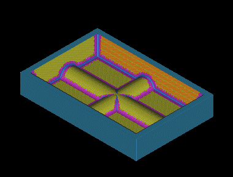

This part contains a cavity machined from a solid block of material. The completed machining program consists of six operations that rough, semi-finish, and finish the part. You will create the last two operations of the program using Flow Cut to finish the corners and fillets.

To complete this project, you should be familiar with the following types of operations.
FLOWCUT_SINGLE
FLOWCUT_REF_TOOL
You will also animate the tool paths to graphically simulate material removal.